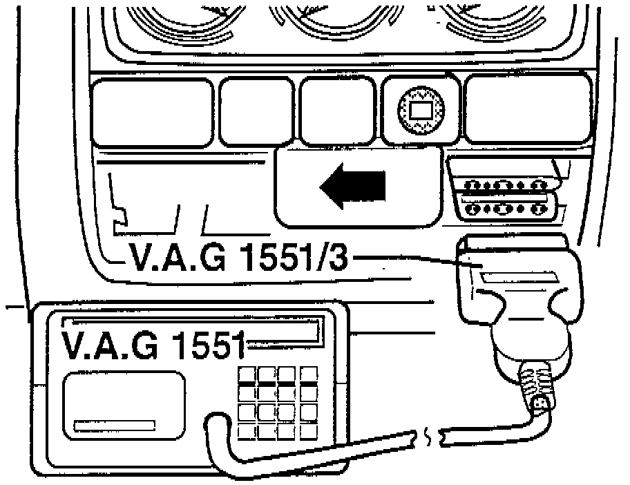
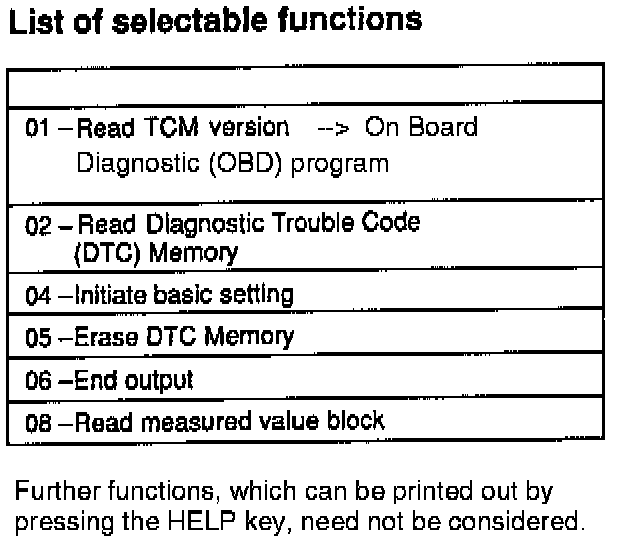

01M Transmission
REQUIREMENTS^ Battery Positive Voltage (B+) OK.
^ Fuses 14 and 21 OK.
^ Check Ground (GND) connections for transmission.
^ Selector lever in position "P" and parking brake applied.
CONNECTING SCAN TOOL V.A.G 1551
- Check Ground connections for corrosion and poor contact; repair if necessary.
NOTE: Ground point is located on left next to relay plate.
- Check battery ground strap and ground strap between battery and transmission.
DLC Location:

- Remove ashtray and slide cover for Data Link Connectors (DLC) to left (arrow).
- With ignition switched OFF, connect Scan Tool (ST) VAG 1551 with adaptor cable VAG 1551/3.
^ Indicated on display:
VAG - On Board Diagnostics HELP
1-Rapid data transfer
^ appears alternately with:
VAG - On Board Diagnostics HELP
2-Blink code output
NOTE:
- Additional operating instructions can be retrieved by pressing the HELP key of the VAG.
- The --> key is used for advancing within the program sequence.
- An automatic check (keys 00) can be carried out in the operating mode 1 "Rapid data transfer". Then all vehicle control modules will be checked automatically.
- Switch ON ignition.
- Switch ON printer with the PRINT key (indicator lamp in key lights up).
- Press key 1 for "Rapid data transfer" mode.
^ Indicated on display:
Rapid data transfer HELP
Enter address word XX
- Press keys 0 and 2 (enter the address word "transmission electronics" with 02).
^ Indicated on display:
Rapid data transfer Q
02 Transmission electronics
- Confirm entry with key Q.
^ Indicated on display:
01M927733BB AG4 Gearbox 01M 2029
Coding 00000 WSC 00000
- The control module identification, the coding and the dealership number of the VAG 1551 are displayed:
Example:
^ 01M 927 733 BB: Part Number.
^ AG4 Gearbox 01M: 4-speed automatic transmission 01M.
^ 2029: EPROM (Program Level).
^ Coding 00000: is not required at present.
^ WSC 00000: VAG 1551 dealership number with which the last coding was performed.
NOTE: Depending upon build level (program level), the control module can indicate a different control module identification to that shown in the example.
^ Indicated on display:
Control module does not answer! HELP
- By pressing the HELP key, a list of possible malfunction causes will be printed out.
- After eliminating the possible causes of malfunctions, again enter the address word 02 for "Transmission electronics" and confirm.
- If "Control module does not answer!" again appears:
^ Check control module voltage supply. Perform test step 1 (Electrical check). Pinout Values and Diagnostic Parameters
^ Check wiring connections to Data Link Connector.
^ Check Diagnostic Trouble Code (DTC) 65535, "control module faulty!"
- Press --> button.
^ Indicated on display:
Rapid data transfer HELP
Select function XX
Transmission Control Module Function Chart:

- After the HELP button is pressed, a list of the possible functions is printed out. Refer to image for list of possible functions.
- After reading a function, the VAG 1551 returns to the following start position:
^ Indicated on display:
Rapid data transfer HELP
Select function XX